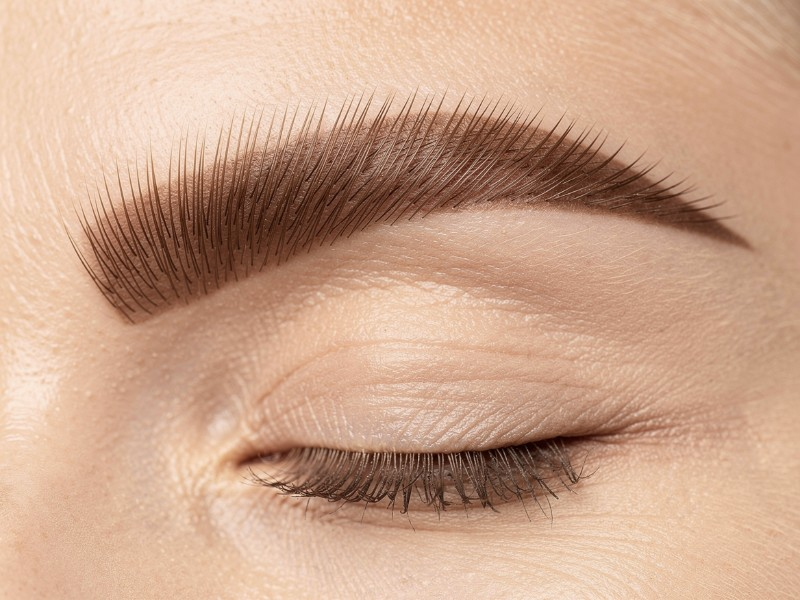
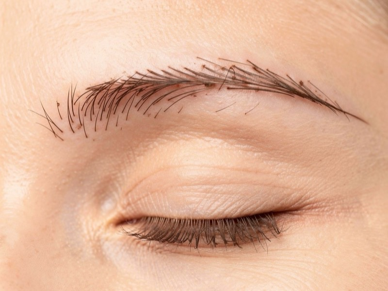
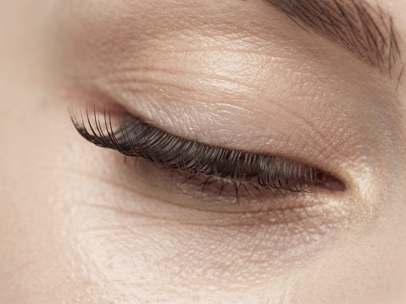
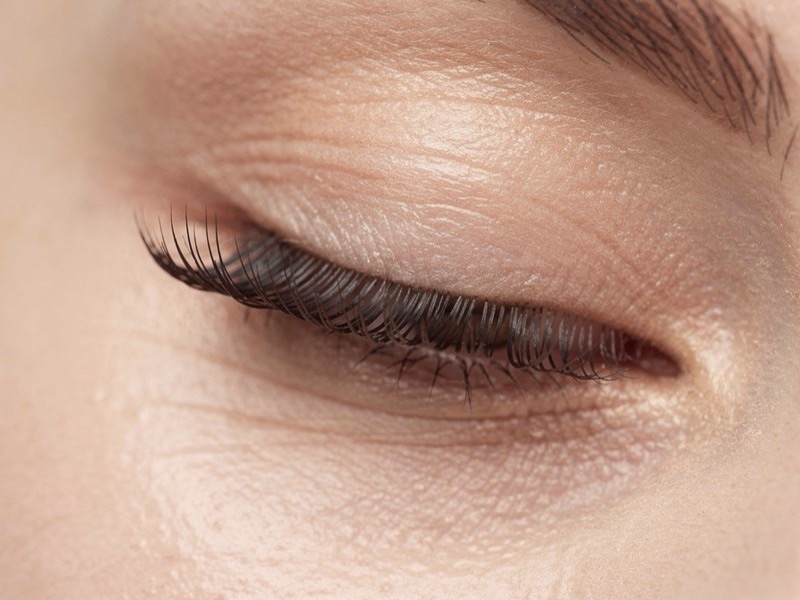
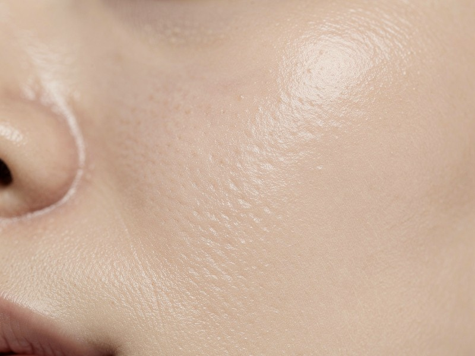
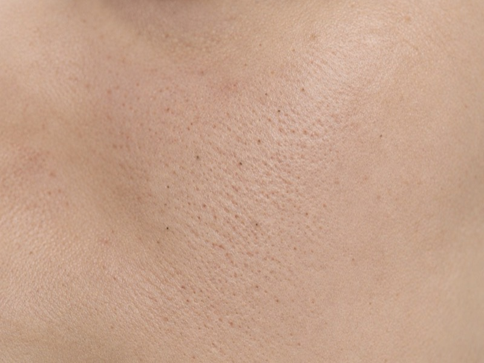
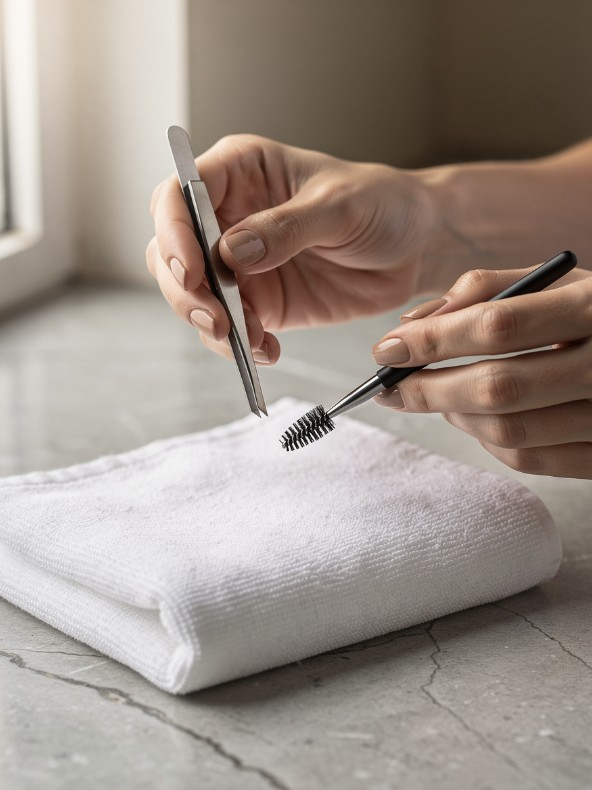
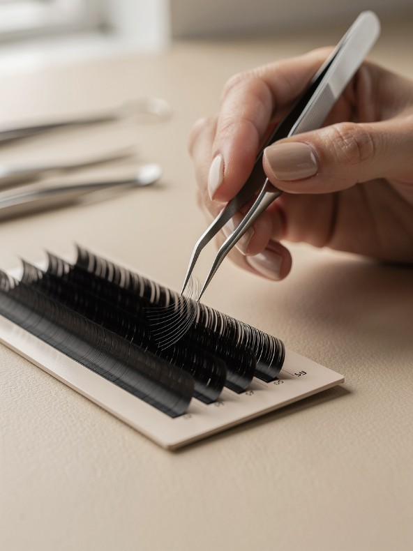
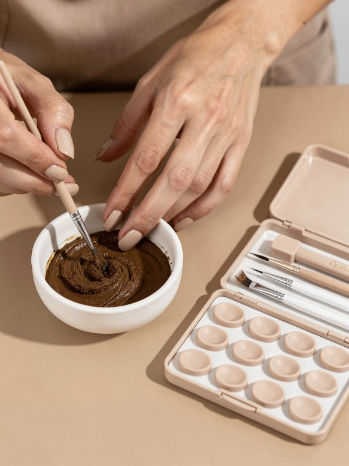
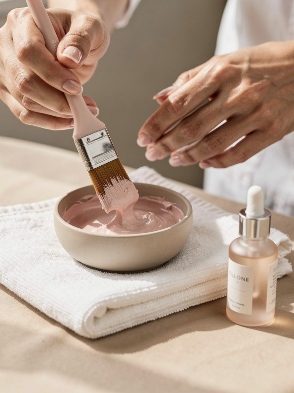

Nº 01Sobrancelha · Cílios · Pele · Alto da Glória
Todo mundo nota.
Ninguém sabe dizer o quê.
Design de sobrancelha, cílios e limpeza de pele no Alto da Glória. O preço e o tempo de cada procedimento estão logo abaixo, e o horário você marca pelo WhatsApp.
A confirmação chega na hora, e o lembrete, um dia antes.

Nº 02Sumário
Tudo o que fazemos, com preço e tempo.
Pix, débito ou crédito. É a primeira vez? A ficha de alergias é feita no check-in, na recepção.
R$ 130 Agendar →
Nº 03Antes e depois
Arraste a linha e compare.
Imagens ilustrativas, geradas por IA para esta demonstração.






Nº 04Equipe
Quatro profissionais, cada uma no seu ofício.
No WhatsApp você escolhe com quem quer fazer, ou fica com quem tiver horário antes.
-

SobrancelhaLívia Prado
“Sobrancelha boa é a que ninguém percebe que foi feita.”
Agendar com a Lívia → -

CíliosMarina Okada
“Antes de colar o primeiro fio, pergunto como você usa maquiagem.”
Agendar com a Marina → -

Cílios e sobrancelhaJoana Reis
“Se você nunca fez, a gente começa pelo lifting.”
Agendar com a Joana → -

PeleTeresa Vidal
“Pele sensível pede menos produto e mais conversa.”
Agendar com a Teresa →
Nº 05Do agendamento à manutenção
Você marca. O estúdio lembra do resto.
-
01
Pelo WhatsApp
Pergunte preço, tempo e cuidados e marque o horário: procedimento, profissional, dia e hora.
Abrir a conversa → -
02
Na recepção
Faça o check-in no totem com o seu telefone, confirme o procedimento e responda a ficha de alergias.
Ver o check-in → -
03
Depois
Um dia antes, a confirmação com a opção de remarcar. Depois do procedimento, os cuidados por escrito. No dia certo, o aviso da manutenção.
Ver os bastidores →
Dói?
A pinça incomoda um pouco. No lifting e na extensão você fica de olhos fechados e não sente dor.
Tenho alergia. Posso fazer?
Conte na ficha do check-in. Na primeira vez com cola ou henna, fazemos um teste de toque 48 h antes.
Posso ir maquiada?
Para cílios, venha sem rímel. Para limpeza de pele, sem maquiagem.
E se eu precisar remarcar?
Um dia antes chega a confirmação no WhatsApp, com o botão Remarcar.
Nº 07Endereço
Rua das Camomilas, 186.
Alto da Glória · Curitiba/PR
Ter a sex, 9h às 20h
Sáb, 9h às 16h
Dom e seg, fechado
+55 41 90000-0003